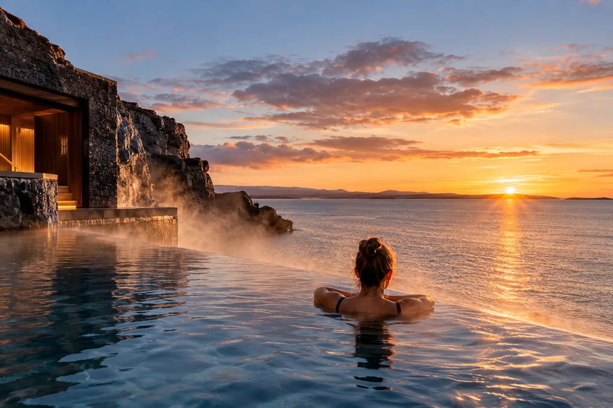

Reykjavik › Sky Lagoon
Sky Lagoon : tarifs, horaires et à quelle heure réserver
Treize minutes du centre, sept étapes, un horizon. Le forfait choisi compte moins que l'heure réservée.
Le Sky Lagoon est un bassin géothermal à débordement ouvert sur la mer, à environ treize minutes du centre de Reykjavik. Deux forfaits, un rituel, une eau à 38-40 °C et un horizon océanique au lieu d'un champ de lave.
Sur un court séjour, il se place bien en fin de journée : laissez les heures de clarté au centre de Reykjavik et venez à l'eau une fois la marche terminée. Pour avoir cette première moitié déjà prête, notre balade audio TouringBee dure environ 2 à 2,5 heures et fonctionne entièrement hors ligne.
La plupart des pages sur le Sky Lagoon passent leur temps à comparer Saman et Sér. C'est la plus petite des deux décisions. La plus grande, c'est l'heure inscrite sur le billet : le rituel Skjól, ces sept étapes que l'on paie, ferme une heure avant le bassin. Le bar ferme avec lui, le café une demi-heure plus tôt, et il est demandé de sortir de l'eau trente minutes avant la fermeture des portes. En prenant le dernier créneau, le rituel reste accessible ; ce qui disparaît, c'est la marge autour.
Vient ensuite l'horizon. Le coucher de soleil pour lequel on fait le trajet tombe vers quinze heures trente autour du solstice d'hiver et presque à minuit en juin. « Le créneau du coucher de soleil » change d'heure chaque mois. Et une règle supprime le projet entièrement pour certains voyageurs : les enfants de moins de 12 ans ne sont pas admis.
En bref
- Où
- Vesturvör 44-48, Kópavogur — environ 13 minutes du centre, parking gratuit
- Forfait Saman
- Dès 14 990 ISK adulte, 7 495 ISK pour les 12-14 ans
- Forfait Sér
- Dès 17 990 ISK adulte, 8 995 ISK pour les 12-14 ans — vestiaires privés en plus
- Horaires
- Saisonniers. Hiver 10:00-21:00 ; été 08:00-23:00
- Dernière entrée
- Deux heures et demie avant la fermeture — 18:30 en hiver
- Meilleur créneau
- 3h30 à 4h avant la fermeture ; en hiver, environ 16:00-17:00
- Coucher de soleil
- Une heure différente chaque mois — vérifiez votre date avant de réserver
- Eau
- Bassin 38-40 °C ; bain froid environ 5 °C
- Âge
- Moins de 12 ans non admis ; 12-14 ans accompagnés d'un adulte de 18 ans ou plus
- Prévoir
- 1,5 à 2 heures sur place, plus le trajet aller-retour
- Annulation
- Gratuite jusqu'à 24 heures avant
Deux ou trois heures avant le bassin ?
La balade audio TouringBee dans le vieux centre : 27 arrêts · 2-2,5 heures · carte et audio hors ligne · 9,99 €.
Audioguide de ReykjavikRéservez à rebours de l'heure de fermeture
Voici la séquence que l'exploitant publie et que presque personne ne lit avant d'acheter. En horaires d'hiver, quand le bassin ouvre de 10:00 à 21:00 :
| Heure | Ce qui se passe |
|---|---|
| 18:30 | Dernier créneau d'entrée vendu — deux heures et demie avant la fermeture |
| 20:00 | Fermeture du rituel Skjól. Et du Gelmir Bar, celui qui se trouve dans le bassin |
| 20:30 | Fermeture du café Keimur |
| 20:30 | Il est demandé de sortir de l'eau |
| 21:00 | Fermeture des portes |
Lisez de bas en haut et la forme apparaît. Une entrée à 18:30 laisse une heure et demie avant la fermeture du rituel. C'est assez pour se déshabiller, se doucher, entrer dans l'eau et faire les sept étapes. Mais le vestiaire, la douche et la moindre file d'attente sortent de cette même heure et demie, donc il ne reste rien. Pour le rituel sans regarder l'heure, puis une heure dans l'eau ensuite, venez plus tôt.
En hiver, je viserais 16:00-17:00. C'est déjà proche du coucher de soleil, qui est la raison du déplacement, et il reste trois à quatre heures avant la fermeture des portes. La même règle vaut en toute saison : comptez 3h30 à 4h en arrière depuis la fermeture, puis comparez le résultat à l'heure du coucher de soleil de votre date.
Les créneaux sont toutes les trente minutes, et le premier correspond toujours à l'ouverture. Ce qui change avec la saison, c'est le dernier : la billetterie cesse simplement de vendre deux heures et demie avant la fermeture.
| Saison | Dates | Ouverture | Dernier créneau |
|---|---|---|---|
| Hiver | 21 oct – 30 avr | 10:00-21:00 | 18:30 |
| Printemps | 1 mai – 20 juin | 10:00-22:00 | 19:30 |
| Été | 21 juin – 20 août | 08:00-23:00 | 20:30 |
| Automne | 21 août – 20 oct | 09:00-22:00 | 19:30 |
Des horaires réduits sont publiés séparément pour les 24, 25, 26 et 31 décembre et le 1er janvier. Si le séjour couvre ces dates, consultez-les plutôt que ce tableau.
Ce que cela coûte vraiment
Deux forfaits. Les deux comprennent l'accès au bassin, un passage dans le rituel Skjól, un temps illimité dans l'eau et dans le bain froid et les serviettes. S'y ajoute un bracelet qui sert à la fois de clé de casier et de moyen de paiement. Saman donne accès aux vestiaires collectifs avec cabines de douche et espace coiffage partagé. Sér ajoute un vestiaire et une douche privés, un espace coiffage individuel, des produits plus généreux et un sac étanche réutilisable.
| Forfait | Adulte, dès | 12-14 ans, dès | Différence |
|---|---|---|---|
| Saman | 14 990 ISK | 7 495 ISK | Vestiaires collectifs, cabines de douche, serviette |
| Sér | 17 990 ISK | 8 995 ISK | Vestiaire et douche privés, sac étanche |
| Carte cadeau Saman | 16 990 ISK | 8 495 ISK | Sans date, valable quatre ans |
| Carte cadeau Sér | 19 990 ISK | 9 995 ISK | Sans date, valable quatre ans |
| Consigne grands bagages | 990 ISK | — | À la réception, pour les valises |
Lequel choisir ? Pour la plupart des visiteurs, Saman. Le bassin, le rituel, le bain froid et la serviette sont identiques dans les deux. Sér achète une pièce privée pour se changer et se doucher, un sac étanche et de meilleurs produits. Si se changer dans un vestiaire collectif vous dérange, ces quelque 3 000 ISK se justifient. Sinon, ils n'apportent rien à la soirée.
Et traitez le tarif affiché comme un plancher, pas comme un prix. Lors de la vérification du calendrier en direct le 6 octobre 2026, les créneaux Saman du jour même étaient à 14 990 ISK et tous ceux des 17, 18 et 25 octobre à 16 990 ISK. L'heure ne changeait rien à ces dates-là. La date, si. Si le séjour tolère un décalage d'un jour, cliquez sur deux dates avant de réserver.
Les créneaux se vendent aussi. Lors de la même vérification, trois créneaux du matin sur une date située dix-neuf jours plus loin étaient déjà complets. L'annulation est gratuite jusqu'à 24 heures avant : réserver tôt ne coûte que la décision.
À deux, une soirée
- Deux forfaits Saman
- Dès 29 980 ISK
- Deux forfaits Sér
- Dès 35 980 ISK
- En plus
- Le transport aller-retour et tout ce qui passe sur le bracelet
Billets et transferts
Pour avoir le transfert et l'entrée sur une seule réservation, ou pour comparer le Sky Lagoon au Blue Lagoon, les deux sont vendus avec prise en charge à l'hôtel sur les grandes plateformes.
Comparer les billets Sites de ReykjavikLes sept étapes, et un avertissement allergie
Le rituel Skjól suit un ordre fixe et se fait une fois. Le bassin lui-même à 38-40 °C, puis un bain froid autour de 5 °C, puis une salle aux murs de tourbe. Ensuite un sauna à 80-90 °C avec vue sur la mer, une brume froide, un gommage du corps et un hammam pour finir. Avant et après, on reste dans l'eau aussi longtemps qu'on veut : c'est le circuit du rituel qui se fait une seule fois.
Détail important en cas d'allergie : le gommage Mýkt contient de l'huile d'amande et de l'huile de sésame. Son usage reste facultatif.
La limite est de trois boissons alcoolisées par adulte et par visite, payées avec le bracelet, et l'entrée est refusée en état d'ivresse. Dans une eau à 38-40 °C, trois suffisent largement.

Comment aller au Sky Lagoon depuis le centre de Reykjavik
D'abord ce qui surprend : le Sky Lagoon n'est pas à Reykjavik. Il est à Kópavogur, la commune qui commence quelques rues au sud de la ville, sur la presqu'île de Kársnes, au 44-48 Vesturvör. Donnez l'adresse au chauffeur, pas le nom de la ville.
En voiture : environ 13 minutes depuis le centre, 12 depuis Hallgrímskirkja, 9 depuis la gare routière BSÍ, 14 depuis Harpa et 45 depuis l'aéroport de Keflavík. Le parking est gratuit, ce qui dans cette ville n'est pas rien.
Sans voiture : le bus 4 de Hlemmur à Hamraborg, environ 15 minutes, puis le 35 ou le 36 jusqu'à Bakkabraut, cinq de plus, puis à pied. L'exploitant vend aussi une navette en option au moment de la réservation. À deux ou plus, le taxi depuis le vieux centre est assez court pour mériter un calcul avant de conclure que le bus est plus avantageux.
Pour un court séjour à Reykjavik, je placerais le Sky Lagoon en fin de journée. Une heure et demie à deux heures sur place plus le trajet aller-retour font environ trois heures, et ces heures-là, la ville les emploie mieux à la lumière du jour. Le matin fonctionne très bien si cela arrange mieux : c'est une recommandation, pas une règle.
L'horizon que vous payez
L'argument de vente, c'est le bord à débordement face à la mer ouverte, et ce qui rend le déplacement intéressant, c'est ce qui se passe sur cet horizon pendant que vous êtes dans l'eau. Or il bouge ici plus que presque partout ailleurs.
Autour du solstice d'hiver, le soleil se couche à Reykjavik vers quinze heures trente, après s'être levé vers onze heures vingt. Un créneau à 15:00 en décembre, c'est le créneau du coucher de soleil. En juin le soleil ne se couche presque pas et la même expérience se joue à vingt-trois heures. Regardez l'heure du coucher de soleil pour votre date avant de choisir : c'est le seul devoir que cette page ne peut pas faire à votre place.
L'autre espoir, c'est l'aurore boréale, et l'honnêteté vaut mieux ici que l'optimisme. Il faut de l'obscurité, un ciel dégagé et de l'activité solaire, dont aucune réservation ne dispose, et l'éclairage du bassin joue contre vous. Cela arrive. Ce n'est pas une raison de choisir un créneau.
Trois cas de figure
Si vous avez une soirée
Parcourez le vieux centre tant qu'il fait jour, dînez tôt, et prenez un créneau trois à quatre heures avant la fermeture. Vous aurez le rituel sans regarder l'heure, puis une heure dans l'eau avec les lumières de la baie d'un côté et absolument rien de l'autre.
Si vous arrivez ou repartez le jour même
C'est possible, mais gardez une grande marge. Du Sky Lagoon à Keflavík, comptez environ 45 minutes en voiture en conditions normales, et la météo comme l'état des routes en Islande modifient cela sans prévenir. Les grands bagages vont en consigne à la réception pour 990 ISK. Regardez d'abord le dernier créneau du jour — 18:30 en hiver — et si le vol est serré, le bassin est ce qu'on abandonne, pas ce qu'on fait en courant.
Si vous voyagez avec des enfants
Les moins de 12 ans ne peuvent pas entrer : le Sky Lagoon est donc un projet pour une soirée où quelqu'un d'autre garde les enfants, ou pas un projet du tout. Les piscines géothermales municipales de Reykjavik accueillent tous les âges pour une fraction du prix, et c'est là que la ville se baigne vraiment. Pour les 12-14 ans, un adulte de 18 ans ou plus doit être du groupe, et une pièce d'identité peut être demandée.
L'audioguide
Le bassin remplit une soirée. La question, c'est ce que vous avez fait des heures de clarté avant — et dans une ville qui en compte quatre en décembre, la question n'est pas mince.

TouringBee, audioguide de Reykjavik
- Tient même dans une courte journée d'hiver. Deux à deux heures et demie, et il reste de la lumière
- Fonctionne entièrement hors ligne — aucune donnée mobile nécessaire pendant la balade
- À votre rythme. Pause café, reprise au même endroit, et vous êtes au bassin à cinq heures
- Un seul paiement. Pas de groupe, pas d'horaire, personne qui vous attend
Cinq erreurs
- Prendre le dernier créneau en voulant une visite tranquille. Le temps suffit techniquement pour le rituel, mais sans marge : vestiaire, douche et file d'attente sortent de la même heure et demie.
- Choisir le forfait avant la date. Les deux font bouger le prix : Saman vers Sér, environ 3 000 ISK, et le même Saman valait 14 990 ou 16 990 ISK selon le jour. Vérifiez les deux avant d'en fixer un.
- Croire que c'est à Reykjavik. C'est à Kópavogur, et l'adresse postale vous y mènera plus vite que le nom de la ville.
- Bâtir le projet autour des enfants. Les moins de 12 ans ne sont pas admis. Mieux vaut le savoir maintenant qu'à la réception.
- Prendre le coucher de soleil pour une heure fixe. Vers 15:30 en décembre, presque minuit en juin. Vérifiez votre date.
Questions fréquentes
Combien coûte le Sky Lagoon ?
Le forfait Saman démarre à 14 990 ISK par adulte et 7 495 ISK pour les 12-14 ans ; le forfait Sér, avec vestiaires privés, à 17 990 ISK et 8 995 ISK. Le tarif dépend du forfait mais aussi de la date : lors de notre vérification du 6 octobre 2026, le même Saman coûtait 14 990 ou 16 990 ISK selon le jour.
Peut-on y aller avec des enfants ?
Pas en dessous de 12 ans. L'exploitant indique que les enfants de moins de 12 ans ne sont pas admis et que les 12-14 ans doivent être accompagnés d'un adulte de 18 ans ou plus. Une pièce d'identité peut être demandée. Avec de jeunes enfants, c'est le spa autour duquel on organise la journée, pas dedans.
À quelle heure réserver ?
La dernière entrée est vendue deux heures et demie avant la fermeture : c'est suffisant pour le rituel, mais sans marge. Pour une visite tranquille, arrivez environ 3h30 à 4h avant la fermeture — en hiver, quand le bassin ferme à 21:00, cela donne à peu près 16:00-17:00.
Le Sky Lagoon est-il à Reykjavik ?
Non, il se trouve à Kópavogur, la commune juste au sud de la ville, au 44-48 Vesturvör sur la presqu'île de Kársnes. Concrètement, environ 13 minutes en voiture depuis le centre et un parking gratuit sur place : plus près que la route de l'aéroport, et bien plus près que le Blue Lagoon.
Comment y aller sans voiture ?
Le bus 4 de Hlemmur à Hamraborg prend environ 15 minutes, puis le 35 ou le 36 jusqu'à Bakkabraut en ajoute cinq, et une courte marche termine le trajet. L'exploitant vend aussi une navette en option au moment de la réservation. Depuis le vieux centre, le taxi est assez court pour valoir le calcul à deux ou plus.
Combien de temps faut-il prévoir ?
L'exploitant conseille une heure et demie à deux heures, ce qui correspond à un passage dans le rituel avec de quoi rester dans l'eau ensuite. Avec le trajet aller-retour, la visite prend environ trois heures de la journée.
À lire ensuite
- Reykjavik en un jour — la journée au bout de laquelle le bassin se place
- Hallgrímskirkja et la tour — billets, horaires et la limite de 16:45
- De l'aéroport de Keflavík à la ville — transferts et heures avant l'enregistrement
- Le guide complet de Reykjavik — la balade, les excursions et les saisons
- Tous les guides de Reykjavik
En résumé
Prenez Saman si un vestiaire privé ne vaut pas environ 3 000 ISK à vos yeux, et reportez l'attention économisée sur l'heure. Trois à quatre heures avant la fermeture donnent le rituel sans précipitation et de l'eau de chaque côté ; en hiver, cela tombe vers 16:00-17:00. Vérifiez la date avant le forfait, et le coucher de soleil avant les deux.
Ensuite, faites quelque chose des heures de clarté : l'audioguide TouringBee est fait exactement pour ces heures-là.
En décembre, le soleil a disparu à quinze heures trente
Le bassin est ouvert jusqu'à vingt et une heures. Il reste la journée — et la journée est justement la partie qui se planifie.
L'image en haut de cette page est une illustration, et non une photographie du Sky Lagoon. Certains liens de cette page sont des liens affiliés : en réservant par leur intermédiaire, nous pouvons percevoir une commission sans surcoût pour vous. Tarifs, horaires et créneaux vérifiés sur le site de l'exploitant et son calendrier de réservation en direct le 6 octobre 2026 ; ils changent sans préavis, confirmez avant de partir. Source : skylagoon.com.